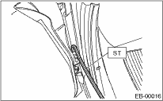
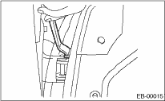

EXTERIOR BODY PANELS > Rear Door
1. Using the ST, loosen the body-side bolts of the upper and lower hinges to align the position for vertical and horizontal direction of rear door panel.
| ST 925610000 | WRENCH |

2. Loosen the door-side bolts of the upper and lower hinges to align the position for vertical and horizontal direction of rear door panel on the front side.

3. Loosen the screw (A) and tap the striker (B) using a plastic hammer to adjust the striker to align the position of rear door panel vertically and laterally at the rear end.
CAUTION:
Do not use an impact wrench. Welding area on the striker nut plate is easily broken.